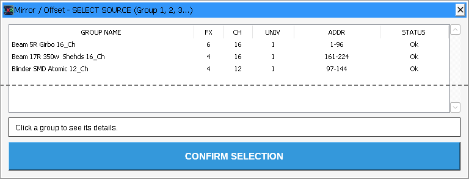

For: Full
Mirror / Offset (in +Add Fixture) changes the movement and dimmer buttons of the open project, window after window:
Every window has < Back (after the first); closing one does nothing. The whole change is one entry of Undo, and it goes into the project file with Save.

The first window with the groups of Andrei_edit.x1.
SELECT SOURCE (Group 1, 2, 3...): the group whose buttons are the model. Each group shows its fixtures (FX), their channels (CH), universe and addresses, and its status; a click shows under the list its profile, its Pan / Tilt / Dimmer channels, the values of its All Front button and every fixture. CONFIRM SELECTION. Then SELECT DESTINATION (Mirrored Group): another group, or the same one.
| Window | What you do |
|---|---|
| CHANNEL MAPPING | Which channel of the source goes to which channel of the destination: click a blue dot (source), then a yellow dot (destination) - a line joins them; the mouse over a yellow dot and Delete takes its line away. Pan, fine Pan, Tilt and fine Tilt are joined at first, found from the profiles. SAVE CHANNEL MAPPING. |
| FINAL CHECK: WHICH BEAM CONTROLS WHICH? | Which fixture of the source drives which fixture of the destination: a blue dot, then an orange dot. At first the mirror image - the first source fixture drives the last one of the destination, the second the one before it, and so on. Mirror, Force Mirror, Straight (first to first) and Clear set all the lines at once. SAVE BEAM CONFIGURATION. |
| FINAL PARAMETERS | The pan and the tilt at which each group looks to the front: C1 for the source, C2 for the destination, read from the All Front button (128 when the project has none) and changeable. Buttons to process: the names of the movement buttons to change, as text. SCHEDULE THE MODIFIED SHOW writes them. |
| Window | What you do |
|---|---|
| Channel Mapping | Which channels of the group are Pan, fine Pan, Tilt, fine Tilt and Dimmer; found from the profile at first. CONFIRM CHANNELS. |
| Processing Settings |
|
At the end a message says how many buttons and steps were changed, and names the buttons of the lists the project does not have.
Tip: to turn every movement of a group a little - after the fixtures were hung a few degrees off, for example - choose the same group twice, MOVES only, untick Enable Mirror MOVES and give a Pan Offset.